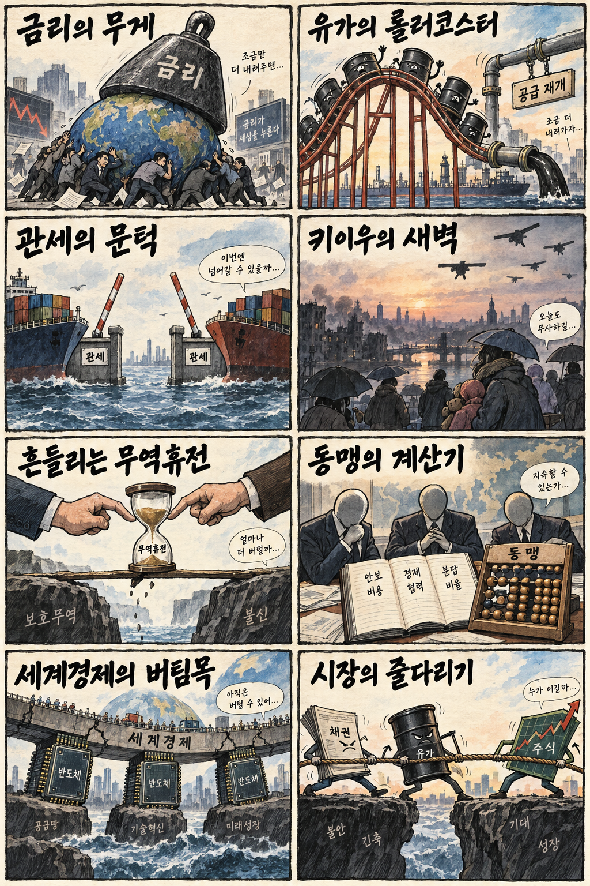
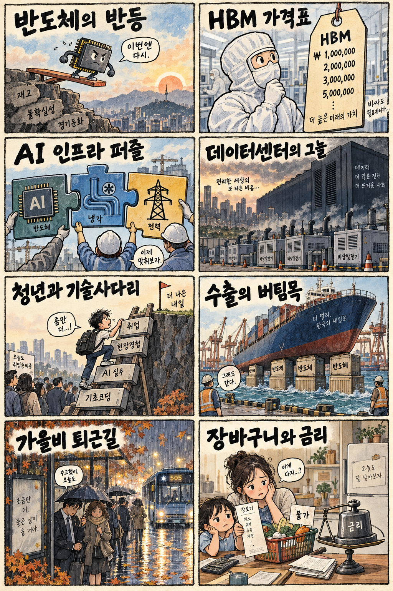

01
오라클 · 132.79→137.79달러 · +3.77%
내용요약 시가 대비 3.77% 상승해 조사 종목 중 가장 강했습니다. 공개 시세로 확인된 상대강도이며 단일 기업 재료는 단정하지 않습니다.
예상여파 클라우드·데이터베이스 관련 투자심리에 우호적일 수 있지만 장기금리 상승일의 개별 강세를 추격 근거로 쓰지 않습니다.
MORNING_BRIEFING_20260930
작성 시각: 2026-09-30 06:38 KST · 직전 미국 정규장과 2026-09-30 KST 당일 공개 기사 기준
직전 미국 정규장인 9월 29일 뉴욕증시는 다우 -0.26%, S&P 500 -0.17%, 나스닥 -0.09%로 소폭 동반 하락했습니다. 30년물 국채금리 상승이 지수 상단을 눌렀지만 반도체와 소프트웨어 안에서는 종목별 반등이 나타났습니다. 한국 증시는 전날 KOSPI가 종가 기준 -0.27%였으나 시가 대비 +0.39% 회복해 반도체 반등의 연속성과 장기금리 부담이 맞설 전망입니다.
| 지수 | 종가 | 등락률 | 한국 증시 시사점 |
|---|---|---|---|
| 다우존스 | 51,349.92 | -0.26% | 장기금리 상승 속 경기·가치주 선별 |
| S&P 500 | 7,670.84 | -0.17% | 장기금리 상승 속 경기·가치주 선별 |
| 나스닥 종합 | 26,797.54 | -0.09% | 기술주 보합권, 반도체 종목별 차별화 |
다우 -0.26%, S&P 500 -0.17%, 나스닥 -0.09%로 금리 부담을 소화했습니다.
종가 기준 -0.27%였지만 시가 대비 +0.39%로 낙폭을 되돌렸습니다.
사우디 홍해 원유 선적 재개로 공급 우려가 일부 완화됐습니다.
06:30 장전 시점에 기준을 모두 통과한 종목이 없어 현금 관망을 유지합니다.
9월 29일 보고서는 공식 추천을 내지 않았습니다. 게시 당시 판단을 유지하며 사후 종목을 추가하지 않습니다.
| 시장 | 종가 | 등락률 | 기준 |
|---|---|---|---|
| KOSPI | 6,870.81 | -0.27% | 9월 29일 정규장 · 시가 대비 +0.39% |
| KOSDAQ | 849.80 | +0.38% | 9월 29일 정규장 · 시가 대비 +0.70% |
| 다우존스 | 51,349.92 | -0.26% | 미국 9월 29일 정규장 |
| S&P 500 | 7,670.84 | -0.17% | 미국 9월 29일 정규장 |
| 나스닥 종합 | 26,797.54 | -0.09% | 미국 9월 29일 정규장 |
오라클이 시가 대비 +3.77%로 조사 종목 중 가장 강했습니다.
액센츄어 +2.33%, 크라우드스트라이크 +2.03%로 상대강도를 보였습니다.
로켓랩이 시가 대비 -5.13%로 조사 종목 중 낙폭이 가장 컸습니다.
스트래티지 -4.20%, 코인베이스 -3.74%로 위험선호 약화가 두드러졌습니다.
내용요약 시가 대비 3.77% 상승해 조사 종목 중 가장 강했습니다. 공개 시세로 확인된 상대강도이며 단일 기업 재료는 단정하지 않습니다.
예상여파 클라우드·데이터베이스 관련 투자심리에 우호적일 수 있지만 장기금리 상승일의 개별 강세를 추격 근거로 쓰지 않습니다.
내용요약 시가 대비 2.33% 올라 IT서비스 종목의 상대강도를 보였습니다.
예상여파 기업 인공지능 전환 수요에 긍정적일 수 있으나 실제 수주 성장과 마진을 확인해야 합니다.
내용요약 시가 대비 5.13% 하락해 조사 종목 중 낙폭이 가장 컸습니다.
예상여파 고변동 성장주에 대한 할인율 부담이 국내 우주·성장 테마의 변동성을 키울 수 있습니다.
내용요약 시가 대비 4.20% 하락해 가상자산 연계주의 약세가 두드러졌습니다.
예상여파 가상자산 위험선호 약화가 국내 관련주에도 전이될 수 있어 가격 추격을 경계해야 합니다.
내용요약 시가 대비 3.74% 하락해 가상자산 거래 플랫폼도 동반 약세였습니다.
예상여파 비트코인 가격과 거래대금 민감도가 큰 만큼 국내 핀테크·가상자산 관련주의 변동성이 확대될 수 있습니다.
전날 KOSPI는 6,870.81로 전일 종가 대비 -0.27%였지만 시가 대비 +0.39% 회복했고, KOSDAQ은 전일 종가 대비 +0.38%, 시가 대비 +0.70% 올랐습니다. 밤사이 미국 지수는 소폭 하락했지만 일부 반도체·소프트웨어는 상대강도를 보였습니다. 유가 하락은 원가와 물가에 우호적이나 장기금리 상승이 성장주 밸류에이션을 누를 수 있어 반도체 시초가 갭을 추격하기보다 외국인 수급을 확인해야 합니다.
오늘은 추천 없음 — 현금 관망
06:30 장전 시점에는 당일 시가 진입 기준과 호가 유동성, 당일 외국인·기관 수급을 검증할 수 없습니다. 미국 지수의 약세와 반도체 개별 반등이 엇갈리고 장기금리 부담이 남아 종합점수 75점·상승확률 60%·손익비 1.5의 문턱을 모두 확인한 후보가 없습니다.
관심 연결종목 메모리 반도체, AI 인프라, 클라우드·보안은 개장 뒤 상대강도 관찰 대상일 뿐 매수 추천이 아닙니다. 시초가 급등 종목은 추격매수하지 않습니다.
30년물 금리 상승세가 기술주와 원화에 미치는 영향을 봅니다.
메모리 가격 전망과 HBM 수요, 국내 대형 반도체의 수급 연결을 확인합니다.
사우디 선적 재개 뒤 공급 우려 완화가 이어지는지 봅니다.
오후 교통·유통 영향과 비가 그친 뒤 기온 하락에 대비합니다.
핵심 요약: AI 인프라 투자가 칩에서 냉각·전력으로 확장되고, 생성형 AI는 24시간 에이전트 경쟁으로 이동하고 있습니다. HBM 가격 전망은 메모리에 우호적이지만 데이터센터 비상전원 관리와 개인정보 보호가 성장의 비용 변수로 떠올랐습니다.
내용요약 삼성그룹이 미국 인공지능 인프라 기업에 10억 달러를 투자해 반도체를 넘어 냉각·전력까지 공급망 접점을 넓힌다는 당일 보도입니다.
예상여파 AI 설비 투자의 수혜 범위가 칩에서 냉각·전력·건설로 확장될 수 있지만 투자 회수와 실제 계열사 수주는 따로 확인해야 합니다.
내용요약 오픈AI가 24시간 작동하는 인공지능 에이전트 ‘닷츠’를 출시해 메타의 경쟁 서비스에 맞선다는 당일 보도입니다.
예상여파 생성형 AI 경쟁이 대화형 모델에서 상시 업무 수행 에이전트로 이동하면서 기업용 소프트웨어와 보안·개인정보 관리 수요가 커질 수 있습니다.
내용요약 내년 고대역폭메모리 가격이 크게 오를 수 있다는 전망과 삼성전자·SK하이닉스의 공급 지배력을 다룬 당일 보도입니다.
예상여파 메모리 수익성 기대에는 우호적이지만 전망치의 전제와 실제 장기계약 가격을 확인해야 하며 단기 급등 추격 근거로는 부족합니다.
내용요약 데이터센터 증가로 도심 비상발전기 용량이 원전 29기 규모까지 늘었지만 관리 체계가 뒤따르지 못한다는 당일 보도입니다.
예상여파 AI 인프라 확장 과정에서 전력망뿐 아니라 대기오염·안전 규제가 새로운 비용과 설비 투자 수요로 부상할 수 있습니다.
내용요약 현대차그룹 기술 인력이 모여 인공지능·로봇·자율주행의 미래 기술을 공유했다는 당일 보도입니다.
예상여파 제조 현장의 AI 전환과 로봇 통합이 빨라질 수 있으나 상용화 일정과 생산성 개선 수치가 투자 판단의 핵심입니다.
핵심 요약: 미중 관세 대화 연장은 긴장 완화 신호지만 북미 상품 규제와 키이우 공격은 교역·안보 불확실성을 남겼습니다. 사우디 원유 선적 재개로 유가가 하락했고, ECB·IMF는 한국 등 AI 수출국이 세계경제를 받치고 있다고 평가했습니다.
내용요약 러시아 드론이 키이우의 정부·외교 시설을 잇달아 공격했다는 당일 보도입니다.
예상여파 외교 시설을 둘러싼 긴장이 커지면 휴전 협상 기대가 약해지고 유럽 방위비와 에너지 위험 프리미엄이 이어질 수 있습니다.
내용요약 미국과 중국이 일부 관세를 낮추고 대화 기간을 연장했다는 당일 보도입니다.
예상여파 무역 긴장 완화는 교역 심리에 긍정적이지만 전략 품목과 동맹국 교역 구조를 둘러싼 불확실성은 남습니다.
내용요약 미국에서 캐나다산 주류 등 일부 상품의 수입금지 조치가 발효됐다는 당일 보도입니다.
예상여파 북미 공급망의 정치적 마찰이 유통·농식품 가격과 기업 조달 다변화 비용을 높일 수 있습니다.
내용요약 사우디가 홍해 얀부항 원유 선적을 재개하면서 WTI가 3.5% 하락했다는 연합뉴스 당일 보도입니다.
예상여파 원유 공급 우려 완화는 물가와 운송비 부담을 낮출 수 있으나 중동 분쟁 경로에 따라 변동성이 다시 커질 수 있습니다.
내용요약 미국과 중국의 둔화에도 세계경제가 견조하며 한국 같은 인공지능 수출국이 버팀목이라는 ECB·IMF 평가를 다룬 보도입니다.
예상여파 한국 수출에는 우호적이지만 성장의 반도체 편중과 주요국 수요 둔화 위험을 함께 점검해야 합니다.

핵심 요약: 미국 반도체 투자심리 반등과 AI 수출국에 대한 긍정적 평가는 국내 기술주에 우호적입니다. 한편 AI 시대 유통 규칙 개편과 디지털 인재 양성이 진행 중이며, 오늘 중부지방은 퇴근길 가을비와 큰 일교차에 유의해야 합니다.
내용요약 마이크론 실적 발표와 엔비디아 자사주 이슈를 앞두고 미국 반도체 투자심리가 반등해 국내 반도체주 영향에 관심이 쏠린다는 당일 보도입니다.
예상여파 삼성전자와 SK하이닉스 심리에 우호적일 수 있지만 장기금리 상승과 장전 갭을 함께 봐야 합니다.
내용요약 인공지능 시대의 거래 질서에 맞춰 유통법과 대규모유통업법 개편에 착수한다는 당일 보도입니다.
예상여파 플랫폼·유통 기업의 의무와 중소 납품업체 보호 규칙이 바뀔 수 있어 세부 입법안과 시행 시기를 확인해야 합니다.
내용요약 인공지능·디지털 신기술 교육과 채용을 연결해 청년과 기업의 일자리 불일치를 줄이는 KDT 사례를 다룬 당일 보도입니다.
예상여파 현장형 디지털 인력 공급에는 긍정적이지만 수료 후 고용 유지율과 직무 수준이 정책 성과를 가를 수 있습니다.
내용요약 ECB와 IMF가 세계경제의 견조함과 한국 등 인공지능 수출국의 역할을 평가했다는 당일 보도입니다.
예상여파 반도체 수출 모멘텀에는 우호적이지만 대외 의존도와 품목 편중은 경기 둔화 때 변동성을 키울 수 있습니다.
내용요약 9월 마지막 날 중부를 중심으로 비가 내리고 일교차가 최대 15도까지 벌어진다는 당일 예보입니다.
예상여파 수도권 퇴근길 교통과 보행 안전에 유의하고 비가 그친 뒤 기온 하락에 대비해야 합니다.
